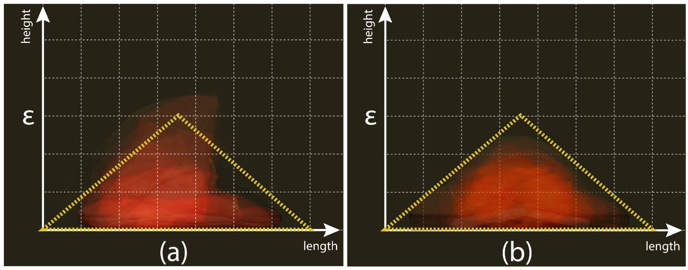

Autonomous Reactive Construction using Compliant Bags
[ Watch Movie ]
We present and validate a property-driven autonomous system that modifies its environment to achieve and maintain navigability over a highly irregular 3-dimensional terrain.
Raw Material
The cone shaped deposition model can guarantee correctness for the construction
algorithm.
A total of 40 bags were placed in varying terrain conditions to find the distribution for the
model.

Adaptive Building Algorithm
Given a structure and a target location, the algorithm builds an access structure through a series of depositions based on local sensor readings, in order to obtain a navigable path.
The
navigable
and
reachable
regions are used for the progress of the adaptive building algorithm.
Experiments
We demonstrate the approach by running the system on a variety of terrains and with mixed materials, including both deformable and rigid components.